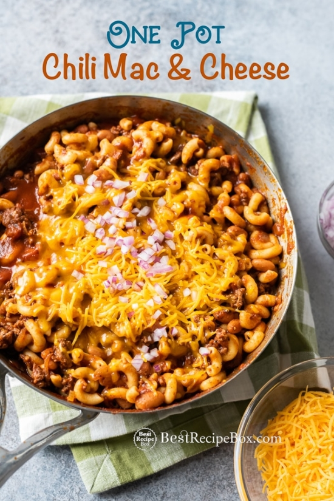

Chili Macaroni and Cheese

Description
Ground beef is not the only way to enjoy this cheesy goodness. You can make it on the stove top and not even have to heat up your oven! It’s a big pot of cheesy chili macaroni and cheese that can feed a whole family. The flavors of the homemade chili with cheese and macaroni always hits the spot. If you don’t want to add beans, just remove them from the pot. There’s someone for everyone! Every bite of this amazing pasta dinner is comfort food for chili lovers.
Ingredients
- 8 oz elbow macaroni pasta
- 1 tablespoon olive oil
- 1 pound ground beef
- 1 small onion
- 4 cloves garlic
- 30 oz tomato sauce
- 15 oz canned beans
- 2 tablespoons chili powder
- 2 teaspoons ground cumin
- 1/2 teaspoon oregano leaves
- Kosher salt
- Fresh cracked black pepper
- 1-2 cups grated cheddar cheese
Cooking Instructions
- Bring a large pot of water to a boil. Season well with salt. Add pasta and cook until al dente, usually about 8-12 minutes or according to package directions. Drain and set pasta aside.
- Return pot to stove on medium-high heat. Add olive oil, then add ground beef. Break up beef into small chunks and cook until browned. Add onion and garlic. Cook onions and garlic until fragrant and soft.
- Add tomato sauce, beans, chili powder, cumin and oregano. Bring to a simmer, give it a good even stir and lower heat to continue simmering. Cook for about 15 minutes. Season with salt and pepper.
- Stir the cooked pasta and cheese into the chili. Cook for another minute or so until the pasta is warmed through and cheese is melted. Serve with your favorite toppings.